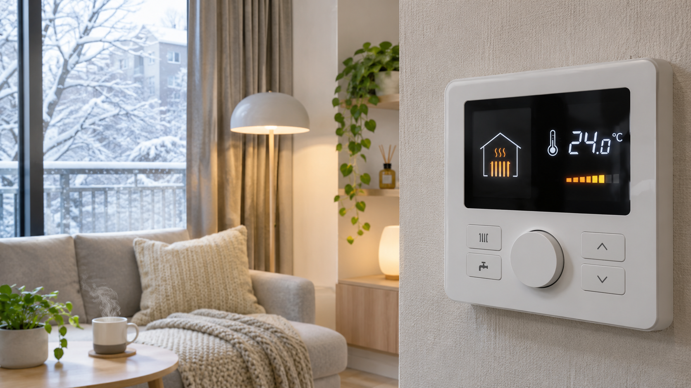

보일러 표시창은 켜졌지만 방이 따뜻하지 않다면 난방 모드, 설정 온도, 분배기 밸브, 에러 표시를 먼저 확인하세요. 가스 냄새·배기가스 냄새·누수·반복 점화 실패가 있으면 조작을 멈추고 환기한 뒤 전문 점검을 받아야 합니다.
| 증상 | 우선 확인 |
|---|---|
| 온수는 되지만 모든 방이 차가움 | 난방 설정·순환 |
| 한 방만 차가움 | 해당 회로 밸브 |
| 점화 반복 | 연료·점화·배기 점검 |
가스 밸브·배기관·본체 커버를 임의 분해하지 말고 가스 냄새가 날 때 전기 스위치를 켜거나 끄지 마세요.
에러 반복, 누수, 이상 냄새·소음이 있으면 모델명과 코드를 준비해 제조사 또는 자격 있는 기사에게 요청하세요. 난방가전 전원 점검 글도 참고하세요.
한국가스안전공사 안전수칙과 제조사 설명서를 따르세요.
제품별 차이가 있으므로 제조사 공식 사용설명서와 고객지원 안내를 우선 확인하세요.